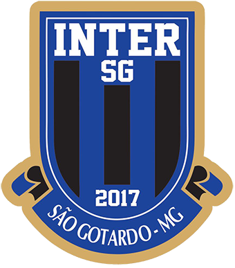
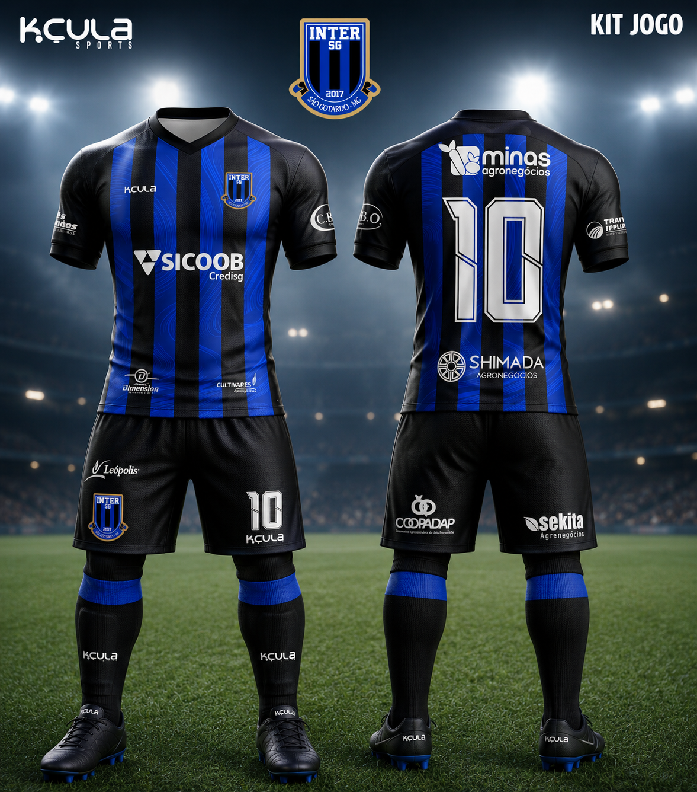
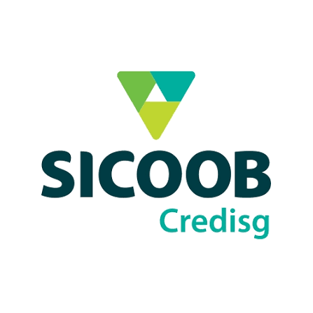
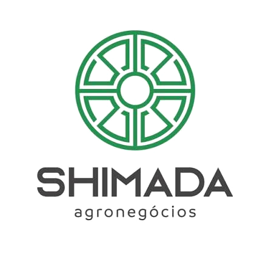
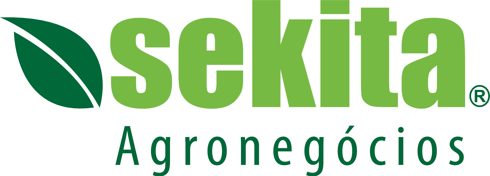
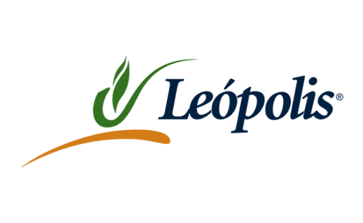
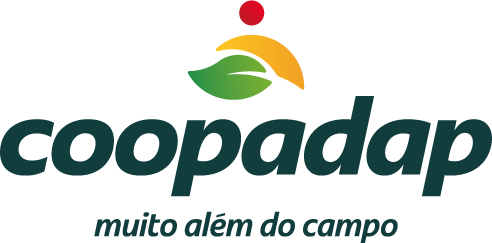

Onde o bruto
vira brilho.
em cada pé descalço, em cada campo
de várzea, em cada sonho cru.
Nosso trabalho é encontrá-lo —
e devolvê-lo ao mundo lapidado.
Um ecossistema em expansão.
Chegam crus.
Sem manual,
sem filtro, sem
rede de proteção.
Garotos de periferias, de cidades onde campo de grama é luxo, onde o ônibus pro treino custa metade do orçamento do mês. O que eles trazem não é técnica. É fome.
Cinco atos. Um método.
Captação
Rede de scouting cobrindo o brasil inteiro. Peneiras frequentes. Sem filtro social.
Estrutura
Alojamento, alimentação, escola integral, psicologia. Vida antes de bola.
Potência
Preparação física, técnica e mental de nível profissional — desde o sub-13.
Exposição
Competições estaduais, nacionais, intercâmbios. O olho do mercado.
Oportunidade
Transição ao profissional ou negociação. A porta para o grande mundo.
Crias do SG que o mercado já levou.
A torcida
respira em rede.
Passe o cursor sobre as regiões para ver a concentração de fãs. Alcance orgânico concentrado no Sudeste, com ramificações no Nordeste e Sul.
Uma audiência no auge do consumo.
Onde sua marca aparece.
Cada centímetro do uniforme é mídia em movimento — exposição em jogos, transmissões, redes e eventos. Conheça as posições disponíveis e seu nível de destaque.

01 02 03 04 05 06A marca circula em todo lugar.
O uniforme é só o começo. Sua marca viaja com o clube por transmissões, redes, vídeos e cada ponto de contato com a torcida.
Transmissões ao vivo
TV regional e streaming dos jogos — marca em campo, placas de LED e uniforme por 90 minutos.
Redes sociais
Instagram, Facebook e TikTok — escalações, resultados e bastidores com sua marca fixada.
Vídeos curtos
Reels, Shorts e TikToks de alta circulação: gols, treinos e histórias dos atletas.
Entrevistas & coletivas
Logo no painel de imprensa em toda entrevista e em cada matéria espontânea sobre o clube.
Site & loja oficial
Presença permanente no site, e-commerce e nos materiais digitais do clube.
Ações presenciais
Jogos, eventos, escola-clube e ações sociais — sua marca diante da comunidade.
Não é uma camisa.
É uma rede de mídia.
Patrocinar o clube é entrar num ecossistema descentralizado de conteúdo: o perfil oficial, a rede dos 50 atletas, as transmissões ao vivo e o impacto contra grandes marcas — somados todo mês.
ALCANCE INTEGRADO DO ECOSSISTEMA
Três naturezas de vínculo.
O QUE VOCÊ RECEBE
- Master frontal da camisa (profissional + base)
- Naming rights da transmissão no YouTube
- Lettering ao lado do placar — 100% do jogo
- Postagens fixadas no perfil oficial
- Relatório de performance mensal
O QUE VOCÊ RECEBE
- Placas de campo em todos os jogos
- Mangas da camisa
- Momento patrocinado na transmissão
- Publicações em dias de jogo
- Presença em coletivas e entrevistas
O QUE VOCÊ RECEBE
- Apoio direto à categoria de base
- Selo oficial "amigo do SG"
- Marca em equipamentos de treino
- Menção mensal nas redes
- Relatório de impacto social
Quanto vale
nosso alcance
pra você?
Modelo baseado em nossos dados reais de engajamento (15k base, +8%/mês) e CPM médio observado em parcerias anteriores. Arraste os controles e simule cenários.
Tudo que acontece,
mês a mês.
Potencial contido.
- Um campo e o galpão de apoio em obra
- Sem academia, scouting ou sala de análise
- Estrutura de formação ainda incompleta
- O talento existe — falta o ambiente para crescer
Potencial libertado.
A parceria que multiplicou
nosso alcance.
Nossa aliança com o Clube Atlético Mineiro e a Copa Intergalo — torneio anual entre categorias de base — colocaram a marca SG no radar nacional. Para os patrocinadores, isso significa exposição em outro patamar.
Você entra em boa companhia.







"Hoje a região reconhece a Sicoob Credisg como uma marca que investe no futuro dos jovens."
"Quem acompanha o SG passou a associar a Shimada ao crescimento do esporte na região."
"A Coopadap virou sinônimo de apoio ao futebol de base para a torcida do SG."
Apoie sem tirar
um centavo do bolso.
Pela Lei de Incentivo ao Esporte, sua empresa direciona parte do imposto de renda que já seria pago ao governo para um projeto sério. Não é um custo novo — é o mesmo imposto, agora construindo sonhos.
Está apoiando histórias e sonhos.
Destina o imposto
Parte do IR devido — até 2% para empresas no lucro real — é direcionada ao projeto.
Vai direto ao Inter SG
O recurso financia formação, estrutura e os atletas da base.
Sua marca cresce junto
Exposição e vínculo com um projeto sério, transparente e de impacto real.
APENAS O IMPOSTO QUE JÁ SERIA PAGO